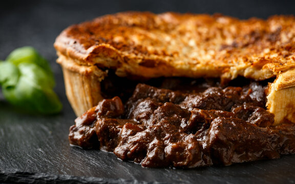

Home
Steak Pie
Description
Based on a recipe from a Scottish bakery in Pickering, Ontario. The stew is easily cutomisable, to make Steak and Kidney Pie,
Pepper Steak Pie, etc.

Ingredients List:
- 1 tablespoon vegetable oil
- 1 pound cubed beef stew meat
- 1 large onion, chopped
- 1 (1 ounce) package dry mushroom gravy mix
- 1 cup water
- 1 teaspoon Worcestershire sauce
- 1 pinch salt and pepper to taste
- 1 sheet frozen puff pastry, thawed
- 1 egg
- 1 tablespoon water
Steps:
-
Heat oil in a large skillet over medium-high heat. Add beef stew meat, and cook until browned. Add onion; cook and stir until
tender, about 5 minutes. Stir in mushroom gravy mix and 1 cup of water. Season with Worcestershire sauce, salt, and pepper.
Turn heat to low, and simmer until beef is tender, about 1 hour.
-
Preheat the oven to 400 degrees F (200 degrees C). Transfer beef mixture to a casserole dish. Roll out puff pastry to cover the
top of the casserole dish. Press edges onto the rim of the dish to seal. Whisk egg and 1 tablespoon of water together in a small
cup using a fork. Brush over the top of pastry.
- Bake in the preheated oven, until pastry is puffed and golden brown, about 20 minutes.